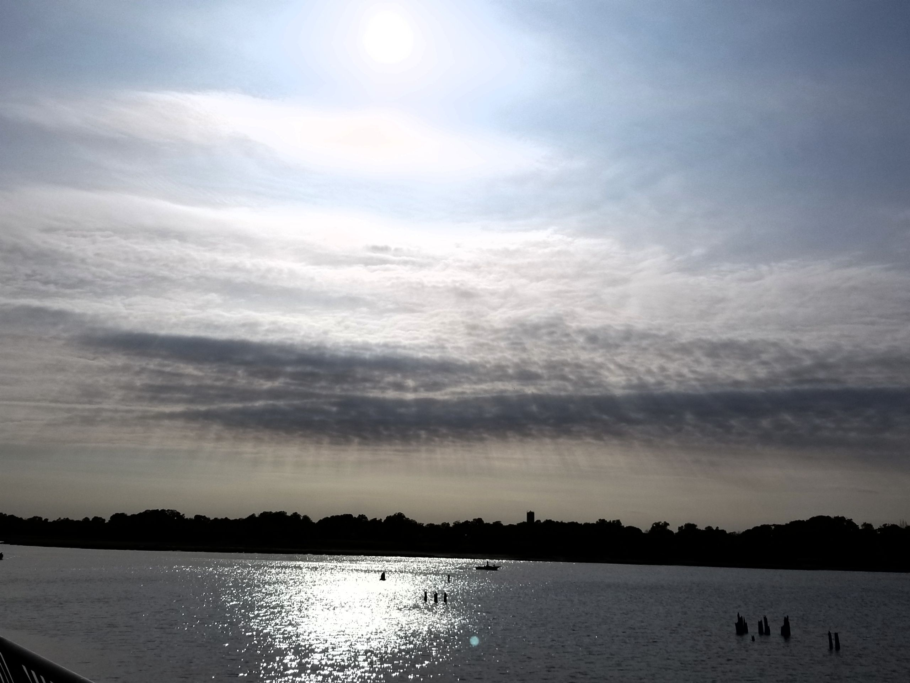

Chef's straight from Michelin Star in London England
Beautiful ballroom for all occasions!
Since 1997, Restaurateur Ashley Fernando and her husband Kyle have redefined modern fine dining absent of traveling the world for an authentic experience. Located in Red Bank, NJ, Fernando's Authentic Cuisine has garnered some of the highest praises from all avenues of the food industry including; four stars from the New York Times, and a 5 star rating in both food and service from the International Food Survey (1997-present). In 2015, Google named Fernando's Authentic Cuisine one of the top 15 restaurants in the country. From 2011-2016, Fernando's Authentic Cuisine was included in Culinary Cuisine's list of the Top 40 Restaurants in the US.
In addition to dining in the restaurant, guests enjoy visiting our outdoor bar, Lux Bar, where bartenders serve signature martinis and meticulously crafted seasonal cocktails. We have an incredible view of the Navesink River and on a warm summer night our outdoor environment can be magical.

No matter what the occasion or how many courses you choose to partake in, Fernando's Authentic Cuisine provides an unforgettable, interactive dining experience that turns moments into memories. From the time the first piece of bread is dipped to when the last nibble of dessert is savored, you'll have the time to discover new things about people you thought you knew, and those you're getting to know.
So whether it's just you and a date, or you and 150 guests for a boutique wedding, join us at Fernando's Authentic Cuisine and take your senses on a trip. Enjoy yourself, Diviertete!